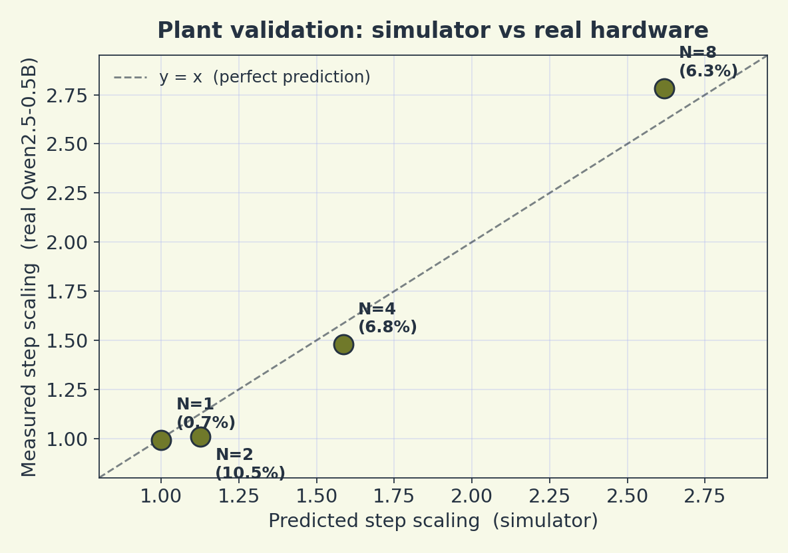
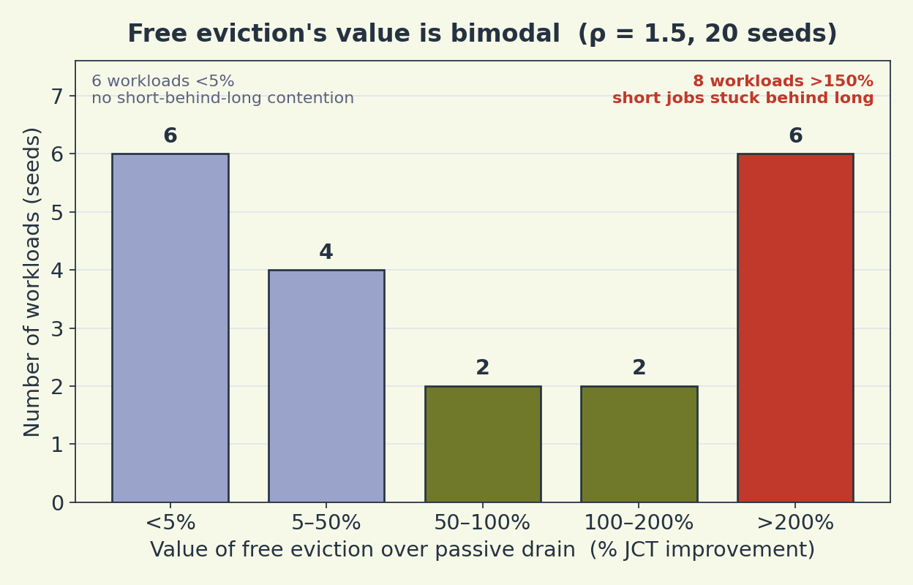
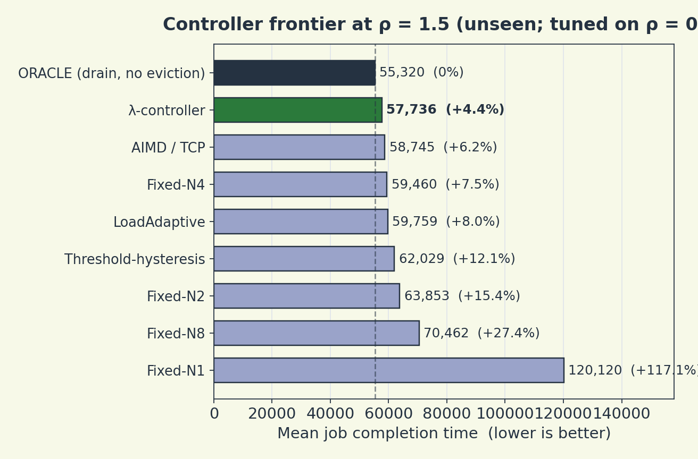

Trajectory's multi-LoRA field note measures a 2.81× throughput gain at N=8 concurrent adapters and names two open questions: what is the optimal co-location depth N, and when does faster eviction pay off? We measured both on real Qwen2.5-0.5B hardware. The short answers: an interpretable controller answers the first for free, and the second depends on your tenant mix — not your utilization — in a way that turned out to be bimodal.
Finding 1: Co-location interference is padding, not compute conflict
Before trusting any controller result, the plant has to match reality. We measured real multi-LoRA step time on Qwen2.5-0.5B (LoRA r=16, forward+backward, RTX 3050, 20 trials per point) and compared the measured slowdown step_time(N)/step_time(1) against the simulator's predicted step_scaling(N).

Simulator step_scaling(N) vs real Qwen2.5-0.5B on RTX 3050 (20 trials each). Worst residual 10.5% at N=2 — and reality is better than predicted there, not worse. Every controller result below rests on this validated plant.
The one notable point is N=2: the simulator's article-calibrated curve expects a 1.126× slowdown, but real N=2 shows almost none (1.008×). That gap is conservative for us — the simulator slightly over-charges shallow packing — and the controller spends most of its time at deeper N under load, where residuals are ≤6.8%.
The more useful finding came from a control batch. A batch mixing short (16-token) and long (96-token) experiments costs essentially the same as a homogeneous batch run at the max length (het/homo@long = 1.01). So the "heterogeneous penalty" people attribute to co-location is really just padding to the longest sequence in the batch — an axis orthogonal to depth N, and one that sequence packing removes. There is no compute-conflict term to engineer around; pack your sequences and the interference you were worried about disappears.
Finding 2: Free eviction's value is workload-determined, not a fixed fraction
Realized N can only fall by passive drain — a training step can't be aborted mid-flight, so depth decreases only as steps complete. The question Trajectory left open is what free eviction (clairvoyant, instant preemption) would buy over that passive drain. At or below capacity, the answer is boring: 0.1% underloaded, 0.6% at ρ=0.9. Natural step-completion already de-packs the GPU fast enough. The interesting regime is sustained overload, and there the answer is not a single number.

Free eviction's value is bimodal across 20 synthetic workloads at ρ=1.5. Six see <5% (no short-behind-long contention). Eight see >150%. The decision variable is workload structure, not load intensity.
The distribution splits into two populations with almost nothing between them. In one regime, short experiments are piled up behind long ones — eviction lets them jump the queue and is worth 150%+ (median of that cluster well past 200%, max 642%). In the other, the workload is homogeneous enough that short jobs aren't trapped behind long ones, and eviction buys under 5%. This is the headline: free eviction's value isn't a property of how loaded you are, it's a property of what your tenants submit. A cluster running at ρ=1.5 with uniform job lengths gains almost nothing; the same load with mixed lengths is transformed. The build decision follows directly — instrument your tenant mix first, then decide.
The aggregate over 20 seeds is +65.9% with a 95% CI of [+31.5%, +122.3%] — wide, because it's averaging across two regimes. The one robust statement is the floor: even at the conservative end, +31.5% exceeds any realistic eviction-engineering cost for an oversubscribed cluster with mixed job lengths.
Finding 3: An interpretable λ-controller answers the optimal-N question
There is no single optimal N — it moves with load, and an operator can't pick it in advance. So instead of a fixed N, we use a one-knob controller: target depth grows with backlog, and a single λ trades throughput against latency. Here is the full frontier at ρ=1.5 (overloaded), against every static and standard-control-law alternative.

At ρ=1.5 (overloaded, unseen during tuning), the λ-controller lands within 4.4% of the constrained oracle, beating AIMD/TCP, threshold-hysteresis, LoadAdaptive, and every fixed-N choice. Tuned on ρ=0.9. Dashed line = drain oracle.
The numbers that matter: Fixed-N2 (Trajectory's recommended operating point) is +15.4%, AIMD/TCP is +6.2%, LoadAdaptive is +8.0%, and the λ-controller is +4.4% — within 4.4% of the best achievable without eviction, beating every alternative on the chart. It does this load-blind: the same λ=1 controller is within 0.3–4.4% of the drain oracle across the whole ρ=0.5–1.5 range, because target depth scales with backlog automatically.
Two things are worth stating plainly. First, this is generalization, not fitting: λ and the deadband were tuned on ρ=0.9 and evaluated frozen on unseen ρ=1.5, same +4.4%. Second, PPO doesn't improve on it. We behavior-cloned the load-adaptive teacher and fine-tuned with PPO across hyperparameters; it degrades the policy rather than improving it, because the optimal policy here is near-deterministic and the reward landscape around it is flat. The analytic λ-law already captures the subproblem — RL has nothing to climb.
Why does proportional control beat AIMD here? TCP-AIMD is built for the opposite asymmetry — cheap to shrink the window, cautious (additive) to grow it. Our actuator is the reverse: cheap to grow depth (just co-locate another adapter), costly to shrink it (you must wait for a step to drain). So the correct law is proportional control on backlog — set N to the load immediately because packing is free — with a deadband, because increases can't be undone. That's exactly the λ-law.
Recommendation
Ship the λ-controller everywhere — it's within 4.4% of the constrained optimum at every load, zero infrastructure cost, no learning required. Build faster eviction specifically when your workload mixes short and long experiments under sustained overload. Below capacity, or with homogeneous job lengths, passive drain is sufficient and eviction engineering is wasted. The decision variable is your tenant mix, not your utilization alone.
Honest limitations
Reproduce
The plant validation, the bimodal CI, and the frontier are all in the repo. Full depth and methodology are in the technical memo.
Devarsh Vasani ·